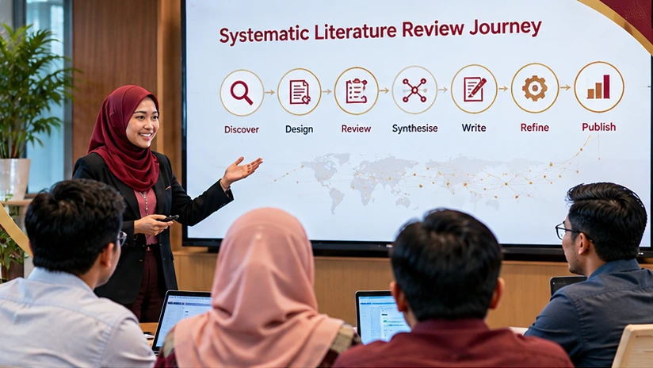

2026 Workshop Programme
Four stages from discovery to publication A progressive workshop in which every session produces a concrete component of the participant’s own systematic literature review manuscript.
Next: Stage 3 & 4 · 16–17 December 2026 Now: Stage 3 & 4 · 16–17 December 2026 Workshop completed · 2026 
Programme learning experience Independent SLR work · until 30 November
Submit your Stage 1 & 2 documents Complete screening, quality assessment and data extraction, then submit your SLR article draft, quality assessment Excel file and PRISMA 2020 diagram by Monday, 30 November 2026, 5:00 PM (Malaysia time) . Late submissions will not be accepted. The Stage 3 writing session assumes the final study set is selected and the evidence is ready for synthesis.
Finished your quality assessment? Follow the 9 steps →
Selection for Stage 3 & 4
Submissions are closed Thank you to everyone who submitted. The secretariat will contact selected participants directly.
DISCOVER → DESIGN → REVIEW → SYNTHESISE → WRITE → REFINE → PUBLISH
Coming up In progress Completed
Stage 3 & 4 · 16–17 December 2026 For participants selected for Stage 3 & 4; the secretariat will contact selected participants.
03
Stage 3 · Crafting the SLR Manuscript Wednesday, 16 December 2026 · 8:30 a.m.–5:00 p.m.
Key sessions Structured synthesis, tables and figures Thematic synthesis and the research-gap narrative Draft refinement Invited talk: journal indexing and the editor’s perspective Manuscript refinement clinic Participant output: Full manuscript draft with characteristics table, figures and synthesis by RQ.
04
Stage 4 · Refinement and Publication Readiness Thursday, 17 December 2026 · 8:30 a.m.–5:00 p.m.
Key sessions Invited talk: writing and publishing in high-impact journals Component check and journal matching Draft review: PRISMA 2020, references and language Alignment, ethics and the submission package Participant output: Near publication-ready manuscript, verified references, AI-use statement, highlights and cover letter.
Prepare: Tools by SLR step · SLR Writing · Figure and Table Gallery
Completed
Stage 1 & 2 · 21–22 October and 28–29 October 2026 Materials remain available for reference and for completing your review.
Stage 1 Literature Discovery and Search Strategy Topic, research questions, keywords, Boolean search strings, databases and the initial article set.
Stage 1 materials → Stage 2 Systematic Review and Evidence Synthesis Protocol, deduplication, screening, PRISMA, quality assessment and data extraction.
Stage 2 materials →
Stage 1 & 2 schedule
Final programme deliverable A substantially completed Systematic Literature Review manuscript prepared towards journal submission.